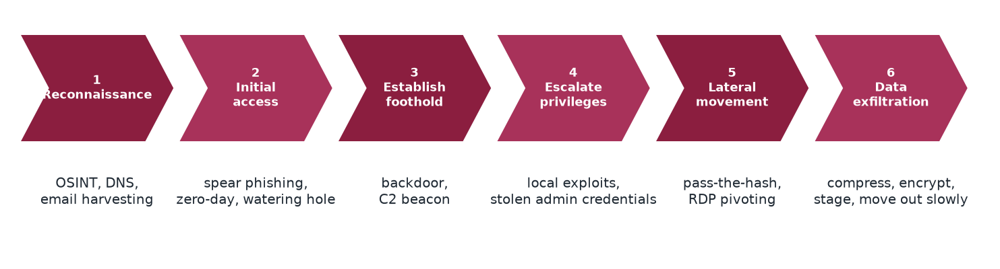

Chapter 12: Advanced Persistent Threats¶
An advanced persistent threat is a long, patient, well-resourced operation, typically by a nation-state or a group it sponsors. "Advanced" refers to the techniques, "persistent" to the months or years of undetected access, and "threat" to the strategic consequences. This chapter describes the six phases of the APT kill chain and four well-known groups, and shows why defence against APTs rests on behavioural detection rather than on any single product.
Layman analogy
An APT is not a smash-and-grab burglary. It's a highly trained, highly patient spy who spends months building a cover identity, gets a legitimate job at your organisation, slowly earns trust, gains access to the most sensitive areas, meticulously photographs every document over 18 months, and departs quietly — with no one ever suspecting they were anything other than a loyal employee.
12.1 The kill chain in six phases¶

Phase 1: Reconnaissance¶
Gather comprehensive intelligence on the target organisation before any attack begins.
- OSINT (Open Source Intelligence): LinkedIn profiling, company websites, DNS records, WHOIS data
- Email harvesting: Collect employee email addresses to identify spear phishing targets
- Social media analysis: Map the org chart, identify executives, IT staff, travel patterns, and relationships
- Goal: Build a detailed picture of the target before firing a single packet
Phase 2: Initial Access¶
Gain the first, carefully concealed foothold inside the target environment.
- Spear phishing: Highly targeted email to a specific, researched individual with a relevant malicious document
- Zero-day exploit: Use an unpatched vulnerability in software the target uses
- Watering hole attack: Compromise a website the target's employees are known to visit regularly
Phase 3: Establish Foothold¶
Ensure persistent access that survives reboots, password changes, and partial detection.
- Install a backdoor that automatically re-establishes itself after reboots
- Implant a C2 (Command and Control) beacon — a hidden process that regularly "checks in" with the attacker's server
- Establish multiple redundant access paths in case one is discovered and closed
Phase 4: Escalate Privileges¶
Move from the initial low-privilege access to administrator or domain administrator level.
- Exploit local OS vulnerabilities to gain elevated privileges
- Mimikatz: A well-known tool that extracts plaintext passwords and hashes from Windows memory
- Kerberoasting: Extract service account password hashes from Active Directory and crack them offline
Phase 5: Lateral Movement¶
Spread from the initial compromised machine to other systems across the network, moving towards high-value targets.
- Pass-the-Hash: Use captured password hashes to authenticate without ever knowing the plaintext password
- RDP Pivoting: Use Remote Desktop Protocol to hop between internal machines
- Living-off-the-Land: Use legitimate Windows built-in tools (PowerShell, WMI, PsExec) to avoid triggering antivirus
Phase 6: Data Exfiltration¶
Extract the target data covertly over an extended period, avoiding detection.
- Compress and encrypt all target data before exfiltration to minimise size and evade content inspection
- Stage data in obscure internal locations before slowly moving it outward
- Exfiltrate gradually over months via covert channels: DNS tunnelling, HTTPS to legitimate cloud services
12.2 Notable APT Groups¶
APT29 — "Cozy Bear" (Russia / SVR): SolarWinds supply chain attack, 2016 DNC hack, COVID-19 vaccine research theft. Techniques: spear phishing, supply chain attacks, stealthy C2 via legitimate cloud services. Targets: government, defence, healthcare.
APT41 — "Double Dragon" (China / MSS): Conducts both government-directed espionage AND financially motivated cybercrime simultaneously — a rare dual mandate. Targets healthcare, gaming, telecommunications. Uses zero-days, watering holes, and ransomware.
Lazarus Group (North Korea / RGB): $1.3B in cryptocurrency theft, $81M Bangladesh Bank SWIFT heist, WannaCry ransomware, Sony Pictures hack. Primarily financially motivated — generates hard currency to fund the North Korean regime in defiance of international sanctions.
APT33 — "Elfin" (Iran / IRGC): Saudi Aramco (Shamoon wiper malware destroyed 35,000 computers), US aerospace companies, global energy sector. Specialises in destructive wiper malware designed to erase and permanently destroy data.
12.3 The four groups at a glance¶
| Group | Origin (as reported) | Notable activity | Typical techniques |
|---|---|---|---|
| APT29 (Cozy Bear) | Russia (SVR) | SolarWinds, the 2016 DNC hack, theft of COVID-19 vaccine research | Spear phishing, supply chain, stealthy C2 through legitimate cloud services |
| APT41 (Double Dragon) | China (MSS) | Espionage and financially motivated crime at once, in healthcare, gaming and telecommunications | Watering holes, zero-days, ransomware |
| Lazarus Group | North Korea (RGB) | About $1.3 billion of cryptocurrency theft, the $81 million Bangladesh Bank SWIFT heist, WannaCry, the Sony Pictures hack | Supply chain, attacks on the SWIFT network |
| APT33 (Elfin) | Iran (IRGC) | Saudi Aramco (Shamoon wiper malware), US aerospace, the energy sector | Spear phishing, wiper malware |
12.4 Defence tips¶
- APTs bypass traditional antivirus — behavioural detection (EDR) is essential
- Implement Zero Trust architecture — verify every access request, trust no one by default
- Network segmentation — a breach of one segment cannot automatically reach others
- Subscribe to threat intelligence feeds: MITRE ATT&CK framework, CISA advisories, FBI flash alerts
- Hunt proactively — actively search for indicators of compromise rather than waiting for alerts
- Log everything — comprehensive logging is essential for post-breach forensic investigation
- Practice and test your incident response plan before you need it — not during a crisis
12.5 Summary¶
- An APT is advanced, persistent and a threat; it unfolds in six phases: reconnaissance, initial access, foothold, privilege escalation, lateral movement and exfiltration.
- APTs use living-off-the-land tools and covert channels so that antivirus sees nothing wrong.
- APT29, APT41, Lazarus Group and APT33 illustrate different motives: espionage, mixed espionage and crime, revenue for a state, and destruction.
- Defence is behavioural: EDR, Zero Trust, segmentation, threat intelligence, proactive hunting, full logging and a rehearsed incident-response plan.
12.6 Exercises¶
-
Put these in order: lateral movement, data exfiltration, reconnaissance, establish foothold, escalate privileges, initial access.
Answer
Reconnaissance, initial access, establish foothold, escalate privileges, lateral movement, data exfiltration.
-
Explain the three words of "advanced persistent threat".
Answer
Advanced: cutting-edge techniques. Persistent: access maintained for months or years without detection. Threat: serious, strategic consequences, such as espionage or sabotage.
-
What does "living off the land" mean and why does it defeat antivirus?
Answer
The attacker uses legitimate built-in tools (PowerShell, WMI, PsExec) instead of custom malware. Antivirus has nothing to flag because the programs are the system's own, so only behavioural detection can notice the misuse.
-
At which kill-chain phase would (a) user training, (b) network segmentation and (c) monitoring for unusual outbound DNS or cloud uploads help most?
Answer
(a) Initial access, where spear phishing is the usual entry. (b) Lateral movement, because a breach of one segment cannot automatically reach others. (c) Data exfiltration.
-
Why do APTs exfiltrate data slowly over months through channels such as DNS tunnelling?
Answer
Slow transfers through normal-looking channels stay below detection thresholds and blend with legitimate traffic, so the theft is not noticed.